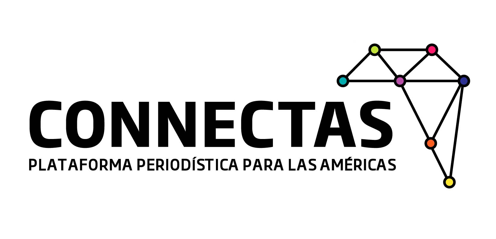

Créditos
- Coordinación General: Marcela Turati
- Programación: David Eads, Iván Castaneira, Dan Hill, Mago Torres
- Diseño: Emilio Cruz e Iván Castaneira
- Coordinación de audiovisual: Mónica González Islas y Ginette Riquelme
- Coordinación de mapas y bases de datos: Fernando Santillán
- Edición y supervisión final: Daniela Rea, Thalía Guido, Marcela Turati, Fernando Santillán, Mónica González, Ginette Riquelme, Mago Torres
- Asesoría especial: Concepción Peralta Silverio
Investigación y redacción
La masacre
- Marcela Turati
- Thalía Guido
- Thelma Gómez
Después de la masacre
- Daniela Rea Gómez
- Concepción Peralta Silverio
- Alba Tobella
- Thelma Gómez
Las víctimas
- Daniela Pastrana
- Marcela Turati
Los culpables
- Alberto Nájar
- Juan Luis García Hernández
- María Aranzazú
- Mayela Sánchez
- Thalía Guido
Documentación y transparencia
- Mago Torres
- Juan Carlos Solís
- Documentos obtenidos por el Proyecto México del National Security Archive
Video y Fotografía
- Guillermo Arias/Archivo - Fotografía de San Fernando Tamaulipas
- Luis Echeverría - Fotografías de Guatemala
- José Cabezas - Fotografías de El Salvador
- AP en fotografía del sobreviviente
- AP en forografía Rancho San Fernando
- Eduardo Verdugo AP/Archivo - Fotografía Policías en DF
- Javier García - Video Introducción
- Mauricio Palos - Video Introducción
- Encarnación Pintado - Video Testimonio de Brasil
- Iván Castaneira - Video y Fotografía Testimonio de Brasil
- Mónica González - Video y Fotografía Testimonio de El Salvador
- Ginetter Riquelme - Video y Fotografía Testimonio de Honduras
- Ricardo Ramírez - Fotografía Testimonio de Guatemala
- José Manuel Jiménez - Video detención de Z-42
- Secretaría de Marina - Video Sobrevuelo Rancho en San Fernando
Mapas y bases de datos
- Fernando Santillán
- Alejandro Melgoza
- Amín López
- Thalía Guido
- Arturo Contreras Camero
- Juan Luis García Hernández
- Melissa del Pozo
Proyecto de Investigación de Periodistas de a Pie
(México 2015)

